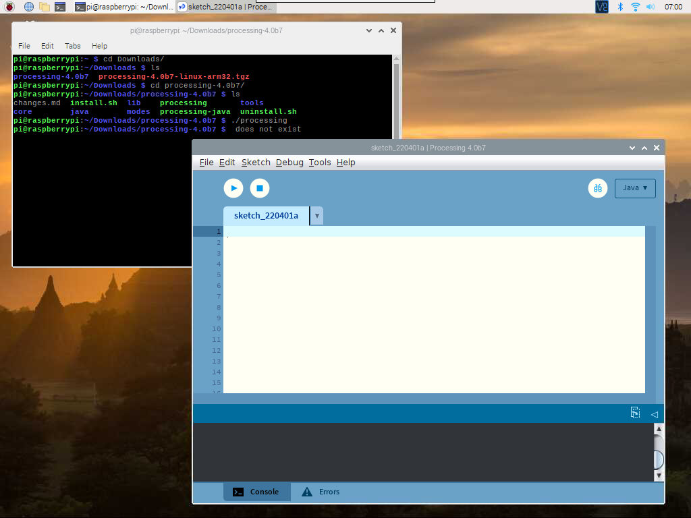

Note
Bonjour, bienvenue dans la communauté SunFounder Raspberry Pi & Arduino & ESP32 sur Facebook ! Plongez plus profondément dans l’univers du Raspberry Pi, Arduino et ESP32 avec d’autres passionnés.
Pourquoi nous rejoindre ?
Support d’experts : Résolvez vos problèmes après-vente et relevez des défis techniques avec l’aide de notre communauté et de notre équipe.
Apprendre & Partager : Échangez des astuces et des tutoriels pour améliorer vos compétences.
Aperçus exclusifs : Accédez en avant-première aux annonces de nouveaux produits et bénéficiez d’aperçus privilégiés.
Réductions spéciales : Profitez de remises exclusives sur nos nouveaux produits.
Promotions festives et cadeaux : Participez à des promotions spéciales et à des tirages au sort.
👉 Prêt à explorer et à créer avec nous ? Cliquez sur [Ici] et rejoignez-nous dès aujourd’hui !
Jouer avec Processing
Qu’est-ce que Processing ?
Processing est un environnement de programmation simple créé pour faciliter le développement d’applications visuellement orientées, mettant l’accent sur l’animation et offrant aux utilisateurs un retour immédiat grâce à l’interaction. Les développeurs souhaitaient un outil pour « esquisser » des idées en code.
Avec l’évolution de ses capacités au cours de la dernière décennie, Processing est désormais utilisé pour des projets de production avancés, en plus de son rôle initial d’esquisse. Conçu à l’origine comme une extension de Java, ciblant les artistes et les designers, Processing est devenu un outil de conception et de prototypage à part entière, utilisé pour des installations à grande échelle, des graphismes animés et des visualisations de données complexes.
Processing est basé sur Java, mais comme ses éléments de programme sont assez simples, vous pouvez apprendre à l’utiliser même si vous ne connaissez pas Java. Si vous êtes familier avec Java, il est préférable d’oublier cette connexion avec Java jusqu’à ce que vous maîtrisiez le fonctionnement de l’API.
Ce texte provient du tutoriel, Processing Overview.
Installation de Processing
Note
Avant de pouvoir utiliser Processing, vous devez accéder au bureau du Raspberry Pi à distance (Accès à Distance au Bureau pour Raspberry Pi) ou connecter un écran au Raspberry Pi.
Pour un tutoriel détaillé, veuillez consulter Pi Processing.
Vous téléchargerez alors un fichier .tar.gz
qui sera familier aux utilisateurs de Linux.
Téléchargez le fichier dans votre répertoire personnel, puis ouvrez une
fenêtre de terminal et tapez :
tar xvfz processing-xxxx.tgz
(Remplacez xxxx par le reste du nom du fichier, qui est le numéro de version.) Cela créera un dossier nommé processing-2.0 ou quelque chose de similaire. Ensuite, changez de répertoire :
cd processing-xxxx
et lancez-le :
./processing
Avec un peu de chance, la fenêtre principale de Processing devrait apparaître.
Installation de Hardware I/O
Pour utiliser les GPIO du Raspberry Pi, vous devez ajouter manuellement une Hardware I/O library.
Cliquez sur Sketch -> Import Library -> Add Library...

Recherchez Hardware I/O, sélectionnez-la, puis cliquez sur Installer. Une fois l’installation terminée, une icône de coche apparaîtra.